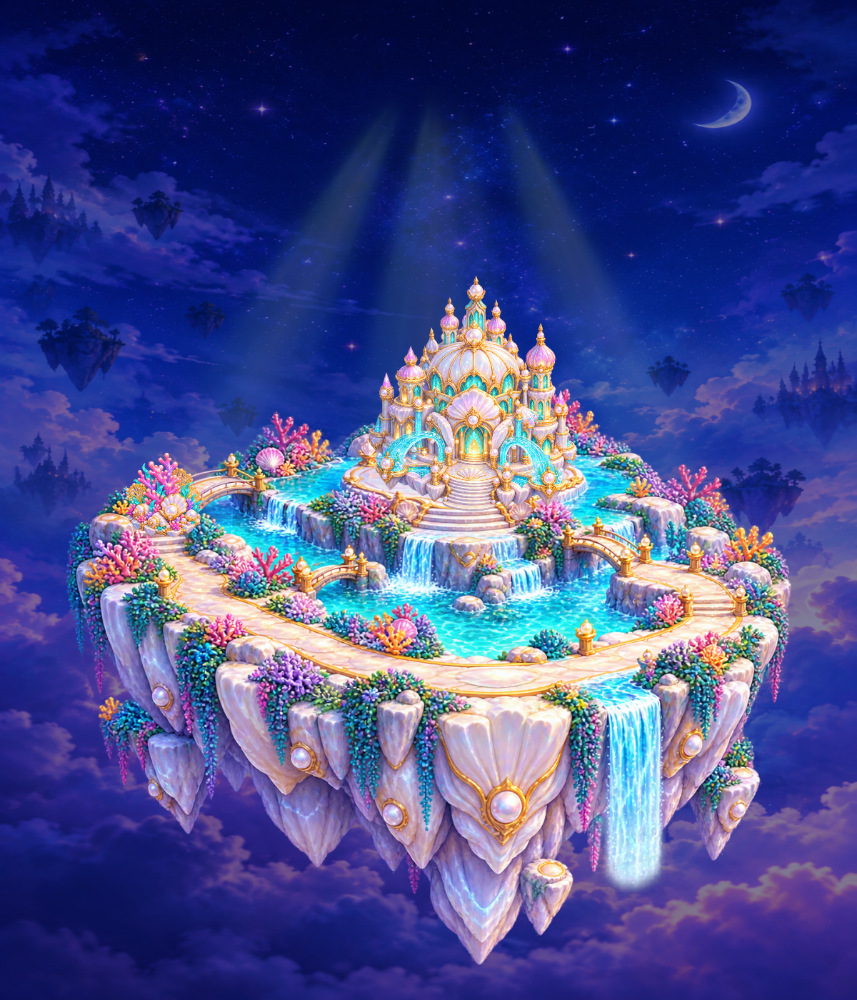
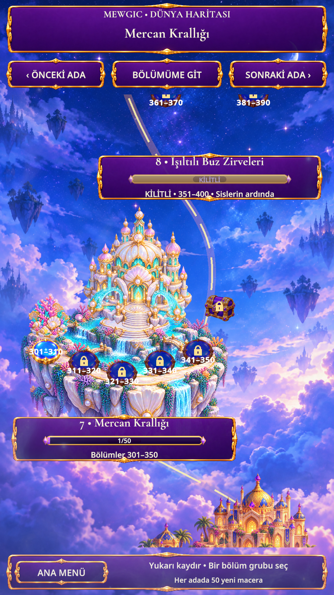

İnci/deniz kabuğu sarayı, kristal su kemerleri, turkuaz havuz/şelale, pembe-mor-altın mercan ve parlayan deniz bitkileri. Ada/su tabanı, mimari ve mercanlar bağımsız PNG/transform; kabarcık ve ışık huzmeleri ayrı efektlerdir.


Sedef/kabuk malzemesi, ince altın çerçeve, mor-pembe mercan ve turkuaz su paleti önceki adalardan farklı bir su krallığı oluşturuyor. Mimari, arka yükseltilmiş platformla aynı perspektif ve ışıkta birleştirildi. Alpha kenarları kaynaklarda tuvale değmiyor; açık/mavi gökyüzünde kontrol edildi. Huzmeler düşük alpha ve kabarcıklar düşük adetle okunurluğu koruyor.
Gerçekçi okyanus simülasyonu veya her kabuğun ayrı3D modeli yok. Su, tamamlayıcı kaynak-atlas maskesiyle ayrı bileşende çizilir; nötr beyaz köpük/ince kenarlarda bazı statik pikseller kalır. Mevcut gökyüzü, harita panelleri ve beş10'luk grup düzeni korunur. İsim plakası kaya tabanının en altını kısmen örter; genel UI referansın piksel kopyası değildir. Telefon/IL2CPP/termal kabulü yapılmadı; yeni build başlatılmadı.
9:19.5 · 9:20 / Safe Area · 341–350 seçicisi · Günlük görev regresyonu · Etkinlik regresyonu · Üretim kayıtları